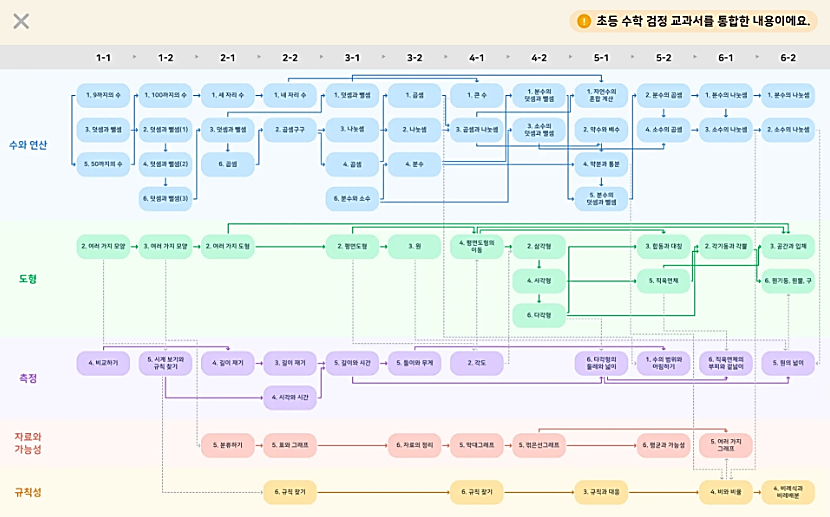
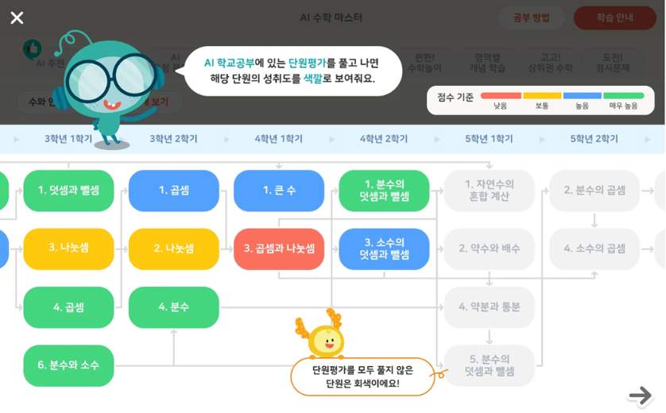
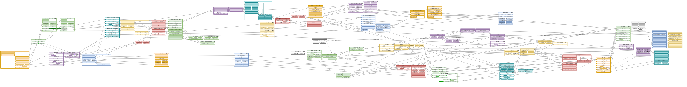
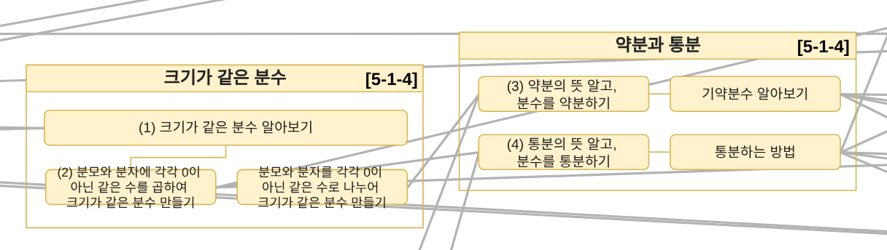
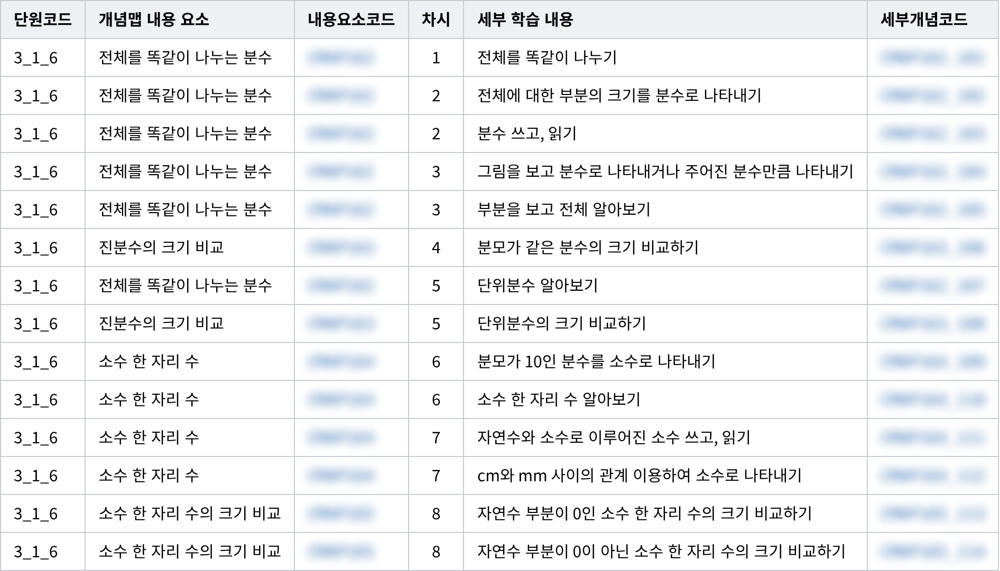

수학 학습 줄기와 개념 지식맵
웅진씽크빅 스마트올의 초등 수학 콘텐츠를, 학생 수준과 교과서에 맞게 찾아 쓸 수 있도록 만든 구조입니다. 처음에는 단원 단위로 학습 순서를 이었고, 검정 교과서가 들어오면서 개념 단위까지 나눈 지식맵으로 넓혔습니다.

- 구분
- 회사 · 웅진씽크빅 스마트올 · 초등 1~6학년
- 역할
- 학습 줄기 기획(단독) · 지식맵은 선배 한 명과 학년을 절반씩 나눠 설계 · 문항 코드 입력은 외주 인력과 함께 · 디지털교과서 표준체계와 지식맵 코드 대조
- 기간
- 2022.07~2023.06
- 도구
- draw.io · Excel
- 결과
- 단원 71개 선후행 연결 · 개념 그룹 226개, 연결선 1,337개, 세부 개념 코드 680개 · 문항 33,972개에 코드 적용
단원 단위로 학습 순서를 이었습니다
먼저 단원 단위로 시작했습니다. 영역별 단원을 선후행으로 잇고, 단원 성취도가 0~30%이면 이전 단원으로, 30~70%이면 현재 단원을, 70~100%이면 다음 단원으로 이어지도록 추천 규칙을 정했습니다. 학습 이력과 진행 상태를 색으로 구분해 부족한 곳이 한눈에 보이게 했고, 고정된 진도가 아니라 성취 수준에 맞는 단원을 직접 고르는 방식입니다.


검정 교과서에 맞추려고 개념 단위까지 나눴습니다
웅진씽크빅에 있는 동안 초등 수학 교과서가 국정에서 검정으로 바뀌었습니다. 모든 학교가 같은 교과서를 쓰던 때와 달리, 검정 교과서 10종은 단원과 차시의 구성과 순서가 저마다 달랐습니다. 단원 순서를 바꾸는 일은 어렵지 않았지만, 국정 교과서 차시에 맞춰 만들어 둔 콘텐츠는 이 순서에 그대로 맞출 수 없었습니다.
차시보다 작은 개념 단위로 나눠 두면, 교과서마다 차시 구성이 달라도 개념을 기준으로 콘텐츠를 다시 묶을 수 있습니다. 그래서 1~6학년 수학의 단원과 차시를 개념 단위까지 나누고, 개념끼리 앞뒤 순서로 이은 지식맵을 만들었습니다. 이 작업은 선배 한 명과 학년을 절반씩 나눠 맡았습니다. 개념 그룹끼리 연결선으로 잇고, 세부 개념마다 코드를 붙였습니다. 그리고 외주 인력과 함께 스마트올이 갖고 있던 문항에 이 코드를 모두 넣었습니다. 순서를 바꾸는 것만으로는 채워지지 않는 자리, 곧 검정 교과서에 새로 들어온 개념은 콘텐츠를 새로 만들어 채웠습니다.



지식맵은 진단검사와 디지털교과서에도 쓰였습니다
이 지식맵은 이후 스마트올의 AI 진단검사와 차시별 개념 이해도 예측에 쓰였습니다. 문항마다 개념 코드가 붙어 있어서, 학생에게 맞는 문항을 골라 제공할 수도 있게 되었습니다.
AI 디지털교과서를 만들 때도 지식맵을 다시 썼습니다. 디지털교과서에는 따로 정해진 내용 체계(표준체계)가 있었습니다. 이 체계는 2단계까지만 정해져 있었고, 회사가 원하면 그 아래를 3단계로 더 나눌 수 있었습니다. 다만 2단계는 개념의 크기가 커서, 학생 한 명 한 명에게 맞춘 학습을 제공하기에는 부족했습니다. 그래서 팀원 한 명과 3단계로 더 나눴고, 이때 지식맵 코드를 많이 참고했습니다. 그다음 지식맵 코드를 직접 만들어 본 제가 표준체계와 지식맵 코드를 대조했고, 그 덕분에 스마트올에 있던 콘텐츠와 문항을 디지털교과서로 더 쉽게 가져올 수 있었습니다.